Feed Service: Detail Design
1. Überblick
Der Feed Service ist ein event-konsumierender Microservice, der denormalisierte Feed-Einträge aus veröffentlichten Blog-Posts erstellt und verwaltet (SWR-090). Er konsumiert Domain Events des Blog Content Service über Kafka und materialisiert eine lesoptimierte Sicht auf veröffentlichte Posts.
Der Service folgt der hexagonalen Architektur (SWA-001) mit klarer Trennung von Domain, Application und Adapter Layer. Er besitzt eine eigene PostgreSQL-Datenbank (Database per Service, ADR-0019, SWA-015) und wird mit eigenen Kubernetes-Ressourcen deployt.
2. Domain-Modell
Das Domain-Modell ist bewusst schlank gehalten. Ein FeedEntry repräsentiert einen denormalisierten, veröffentlichten Blog-Post mit den für die Feed-Anzeige relevanten Metadaten.
Das folgende Klassendiagramm zeigt die Struktur des Domain Layers:

Die TenantId stammt aus dem Shared Kernel (libs/shared-kernel) und gewährleistet konsistente Tenant-Isolation über alle Services hinweg (SWR-003).
3. Application Layer
Der Application Layer definiert die Ports für eingehende Events und ausgehende Persistenz.
Das folgende Diagramm zeigt die Ports und den Application Service:

Der FeedEntryService implementiert das Upsert-Pattern: Bei onPostPublished wird ein bestehender Eintrag aktualisiert oder ein neuer erstellt. Bei onPostUpdated werden nur bestehende Einträge aktualisiert (SWR-090).
4. Adapter Layer
5. Konfiguration
Die Bean-Verdrahtung erfolgt in der FeedConfiguration-Klasse, konsistent mit dem Muster der anderen Services (BlogContentConfiguration, TenantManagementConfiguration):
@Configuration
public class FeedConfiguration {
@Bean
public FeedEntryUseCase feedEntryUseCase(FeedEntryRepository feedEntryRepository) {
return new FeedEntryService(feedEntryRepository);
}
}6. Anforderungsverfolgung
Die folgende Tabelle zeigt die Zuordnung der implementierten Anforderungen zu den Komponenten:
| Anforderung | Beschreibung | Implementierung |
|---|---|---|
SWR-090 |
Feed-Einträge aus Post-Events materialisieren |
|
SWR-003 |
Tenant-Isolation auf Datenebene |
|
SWA-001 |
Hexagonale Architektur |
Package-Struktur domain/application/adapter |
SWA-005 |
Domain Events über Kafka |
|
SWA-015 |
Database per Service |
Eigene PostgreSQL-Datenbank |